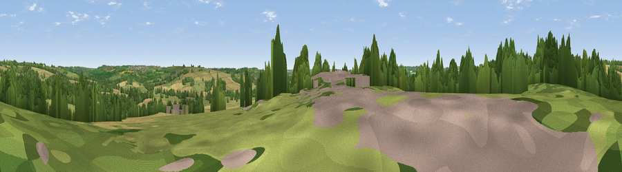

Viewpoint near Kingham
#33273 in England · top 73% of its area beats it · near KinghamThe view, rendered

A 360° render of this exact spot computed from the terrain model, tree cover and land cover — summer colours, afternoon light, calibrated against photographs of famous viewpoints. Real trees, hedges and buildings will differ in detail.
The panorama
Grey silhouette: terrain skyline in each direction (720 bearings, Earth curvature and refraction included). Dashed green: skyline with trees (+15 m) and buildings (+8 m) as obstacles. Blue strip: how far the ground is visible on each bearing.
Where the view opens
Wedge length = distance to the farthest visible ground on that bearing (vegetation-aware). Rings at 10, 25 and 50 km.
What fills the view
40% grassland · 33% cropland · 26% woodland · 2% built-up
Angular shares of the visible panorama (visual magnitude), not map area. Landscape diversity 0.50 (0–1 Shannon).
Key numbers
More beautiful places nearby
The staircase of upgrades: each row has a higher view potential than everything closer. Driving times are estimates from straight-line distance, calibrated against real road routing — check an actual route before setting out.
| Place | Direction | Drive | Score |
|---|---|---|---|
| Viewpoint near Adlestrop | NNW · 2 km | ~6 min | 56.9 |
| Viewpoint near Little Rollright | NNE · 4 km | ~9 min | 58.7 |
| Viewpoint near Little Rollright | NNE · 4 km | ~10 min | 63.5 |
| Viewpoint near Little Rollright | NNE · 5 km | ~10 min | 64.2 |
| Viewpoint near Little Compton | N · 5 km | ~11 min | 67.2 |
| Viewpoint near Upper Brailes | NNE · 13 km | ~24 min | 68.5 |
| Viewpoint near Upper Tysoe | NNE · 17 km | ~30 min | 70.4 |
| Viewpoint near Ilmington | NNW · 17 km | ~30 min | 72.6 |
51.93479, -1.61124 · source: screening · position refined by local search. Computed location — check access rights before visiting.